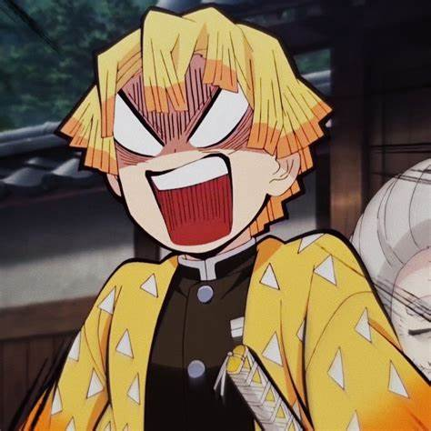
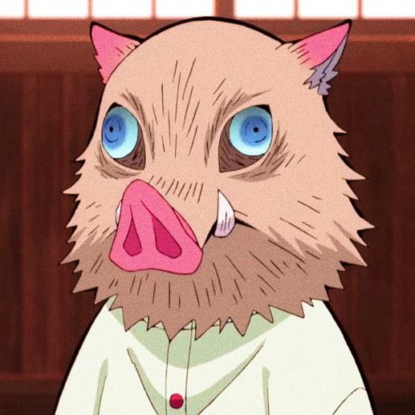

Tanjiro é o protagonista do mangá e anime "Demon Slayer: Kimetsu no Yaiba". Ele é um jovem bondoso e dedicado que se torna um caçador de demônios depois que sua família é brutalmente assassinada por um demônio, com exceção de sua irmã mais nova Nezuko, que é transformada em um demônio.
Como um caçador de demônios, Tanjiro se esforça para proteger as pessoas e encontrar uma cura para Nezuko, ao mesmo tempo em que luta contra demônios perigosos e poderosos. Ele é um espadachim habilidoso, tendo treinado intensamente para se tornar forte o suficiente para enfrentar os demônios, mas também é compassivo e tenta encontrar maneiras de salvar tanto os humanos quanto os demônios.
Além disso, Tanjiro é um personagem muito humano, com falhas e inseguranças. Ele é gentil e carinhoso com seus amigos e companheiros de luta, mas também pode ser impulsivo e teimoso em suas decisões. No entanto, ele sempre se esforça para fazer o que é certo e se tornar mais forte para proteger aqueles que ama. Sua determinação e coragem inspiram outros personagens ao longo da história e o tornam um herói admirável.
Tanjiro é o protagonista do mangá e anime "Demon Slayer: Kimetsu no Yaiba". Ele é um jovem bondoso e dedicado que se torna um caçador de demônios depois que sua família é brutalmente assassinada por um demônio, com exceção de sua irmã mais nova Nezuko, que é transformada em um demônio.
Como um caçador de demônios, Tanjiro se esforça para proteger as pessoas e encontrar uma cura para Nezuko, ao mesmo tempo em que luta contra demônios perigosos e poderosos. Ele é um espadachim habilidoso, tendo treinado intensamente para se tornar forte o suficiente para enfrentar os demônios, mas também é compassivo e tenta encontrar maneiras de salvar tanto os humanos quanto os demônios.
Além disso, Tanjiro é um personagem muito humano, com falhas e inseguranças. Ele é gentil e carinhoso com seus amigos e companheiros de luta, mas também pode ser impulsivo e teimoso em suas decisões. No entanto, ele sempre se esforça para fazer o que é certo e se tornar mais forte para proteger aqueles que ama. Sua determinação e coragem inspiram outros personagens ao longo da história e o tornam um herói admirável.
 Zenitsu Agatsuma é um personagem do mangá e anime "Demon Slayer: Kimetsu no Yaiba". Ele é um jovem covarde que se junta a Tanjiro como um caçador de demônios, mas inicialmente reluta em enfrentar os demônios e é frequentemente visto chorando e implorando por sua vida.
No entanto, Zenitsu é um personagem complexo que tem um passado trágico e uma habilidade única como espadachim. Ele tem um ouvido aguçado que lhe permite ouvir melhor do que a maioria das pessoas, e essa habilidade é ampliada quando ele adormece. Quando Zenitsu dorme, ele se transforma em um lutador habilidoso e poderoso, capaz de lutar contra demônios com facilidade.
Além disso, Zenitsu é um personagem muito emocional e pode ser visto como dramático e exagerado em suas reações. No entanto, ele também é gentil e tem um coração bondoso, especialmente em relação às mulheres. Ele tem uma queda por Nezuko e está disposto a arriscar sua vida para protegê-la.
Embora Zenitsu comece como um personagem covarde e desagradável, ele se desenvolve ao longo da história e se torna um personagem mais forte e confiante. Ele aprende a controlar suas habilidades enquanto está consciente e a lutar com coragem e determinação. Seu crescimento como personagem é um dos pontos fortes da série e é apreciado pelos fãs do anime.

Inosuke Hashibira é um personagem do mangá e anime "Demon Slayer: Kimetsu no Yaiba". Ele é um jovem caçador de demônios que se junta a Tanjiro em sua jornada para derrotar os demônios.
Inosuke é conhecido por seu comportamento excêntrico e sua personalidade combativa. Ele é um lutador habilidoso e tem uma grande confiança em suas habilidades, muitas vezes se lançando de cabeça em situações perigosas sem pensar nas consequências. Inosuke é também um personagem muito impulsivo e tem uma natureza competitiva, sempre buscando superar Tanjiro em tudo o que fazem.
Além disso, Inosuke é conhecido por usar uma máscara de javali que cobre a maior parte de seu rosto e pelo fato de ter crescido sozinho nas montanhas, o que o deixou sem muita experiência social e sem noção das convenções sociais. No entanto, ele se torna um membro valioso da equipe de Tanjiro, ajudando a lutar contra os demônios com suas habilidades únicas e sua determinação.
Ao longo da história, Inosuke mostra um lado mais gentil de sua personalidade e desenvolve um relacionamento próximo com seus companheiros de equipe. Ele também é visto como um personagem engraçado e divertido, muitas vezes causando situações cômicas com suas ações impulsivas e suas interações com os outros personagens.